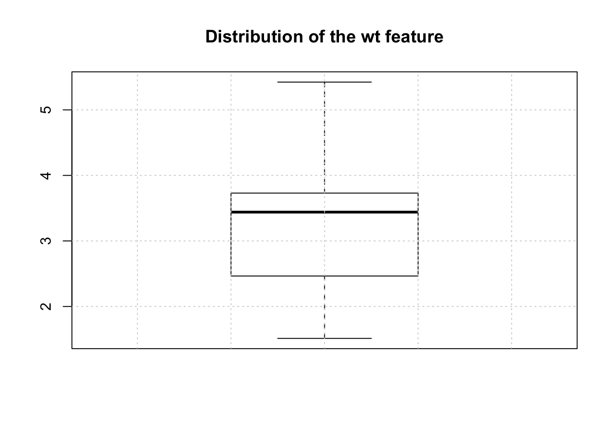
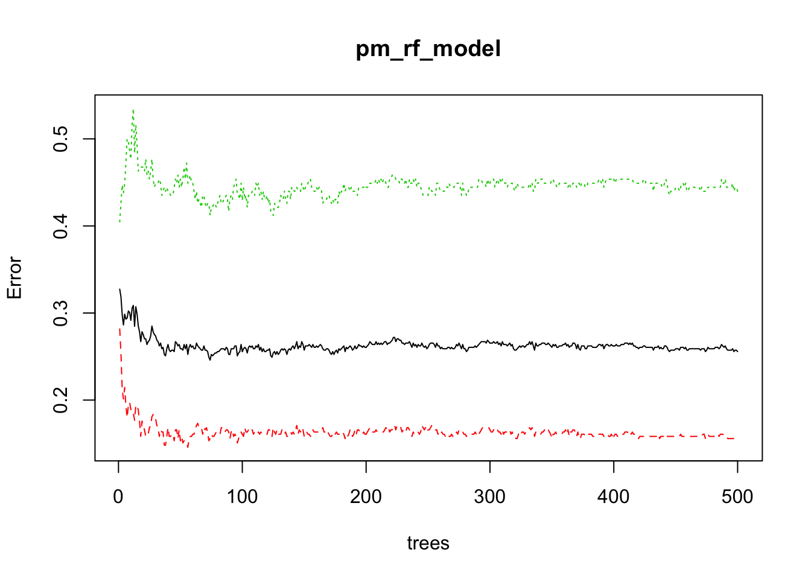

Chapter 9 Data Pre Processing
9.1 Types of Pre Processing
Data rarely arrives in a form that is directly suitable for use with a modeling method. There are a number of considerations to make such as how to handle missing data, highly correlated variables, and class imbalances - some categories are over or under represented. Additionally, some variables, also known as “features”, will require transformation or will need to be used to create new variables. Consider the case where the measured data (the numeric data) might be on different scales (e.g. height vs weight). This might result in the need to scale and center the data. Some methods take this into consideration whereas others do not. Suffice it to say that data prep can be an ongoing process that requires a number of experiments before arriving at the best form of data.
9.2 Scaling
In terms of what methods benefit (or require) you to scale data prior to use, consider that any method that uses the idea of “distance”. This helps avoid large scale features dominating others. The following approaches benefit from scaling:
Linear/non-linear regression, logistic regression, KNN, SVM, Neural Networks, clustering algorithms like k-means clustering. Methods that employ PCA and dimensionality reduction should use scaled data. In R and Python, many of the functions to employ these methods might have arguements to activate the scaling as part of the process. Some will do it for you.
Methods that don’t require scaling (or whose results don’t rely upon it) include rule-based algorithms such as Decision trees and more generally CART - Random Forests, Gradient Boosted Decision Even if you scale the data the relative relationships will be preserved post scaling so the decision to split a tree won’t be impacted.
9.3 Missing Data
This is a frequent situation in real life. Think of patients checking in for clinic vists over time. Sometimes they come, sometimes they don’t. Sometimes when they do come, their information has changed or some diagnostic test is repeated with a new result which is entered or not. Or, whomever maintains the patient database, decides to add in some new variables to measure for all patients moving forward. This means that all existing patients will have missing values for those new variables. To see how this manifests practically in predictive learning consider the following version of the mtcars data frame which has some missing values:
library(readr)
url <- "https://raw.githubusercontent.com/steviep42/utilities/master/data/mtcars_na.csv"
mtcars_na <- read_csv(url)## Parsed with column specification:
## cols(
## mpg = col_double(),
## cyl = col_double(),
## disp = col_double(),
## hp = col_double(),
## drat = col_double(),
## wt = col_double(),
## qsec = col_double(),
## vs = col_double(),
## am = col_double(),
## gear = col_double(),
## carb = col_double()
## )9.3.1 Finding Rows with Missing Data
Ar first glance it looks like all fearures have valid variable values but we can look for missing values which, in R, are indicated by NA Base R provides a number of commands to do this. First let’s see how many rows there are in the data frame.
nrow(mtcars_na)## [1] 32Now let’s see how many rows have at least one column with a missing value. So we have eight rows in the data frame that contain one or more missing values.
sum(complete.cases(mtcars_na))## [1] 249.3.2 Finding Columns With Missing Data
What columns have missing values ? Here we leverage the use of the apply family of functions along with the ability to create anonymous functions on the fly. Both R and Python provide this capability. We see that the wt column has three missing values and the carb feature has six missing values.
sapply(mtcars_na,function(x) sum(is.na(x)))## mpg cyl disp hp drat wt qsec vs am gear carb
## 0 0 0 0 0 3 0 0 0 0 6If we actually wanted to see all rows with missing values:
mtcars_na[!complete.cases(mtcars_na),]## # A tibble: 8 x 11
## mpg cyl disp hp drat wt qsec vs am gear carb
## <dbl> <dbl> <dbl> <dbl> <dbl> <dbl> <dbl> <dbl> <dbl> <dbl> <dbl>
## 1 21 6 160 110 3.9 NA 17.0 0 1 4 4
## 2 22.8 4 141. 95 3.92 NA 22.9 1 0 4 2
## 3 19.2 6 168. 123 3.92 3.44 18.3 1 0 4 NA
## 4 16.4 8 276. 180 3.07 4.07 17.4 0 0 3 NA
## 5 30.4 4 75.7 52 4.93 1.62 18.5 1 1 4 NA
## 6 33.9 4 71.1 65 4.22 1.84 19.9 1 1 4 NA
## 7 15.2 8 304 150 3.15 NA 17.3 0 0 3 NA
## 8 30.4 4 95.1 113 3.77 1.51 16.9 1 1 5 NAWhat do we do with these ? It depends on a number of things. How hard is it to get this type of data ? If it’s rare information then we probably want to keep all of it because there isn’t that much of it and not all columns are missing for any row. In fact most of the data in a given row is present so maybe one strategy is to tell whatever modeling method we use to ignore the missing values - they might do this by default without you even asking.
We could just filter out any row from the data frame that contains any missing values but in doing so we would lose eight rows of data. This is low stakes data but if this were rare or hard to obtain information then we wouldn’t want to do this.
mtcars_no_na <- mtcars_na[complete.cases(mtcars_na),]
nrow(mtcars_no_na)## [1] 249.3.3 Use the Median Approach
What could we do ? Well we could keep all rows even if they contains NAs and then use imputation methods to supply values for the missing information. There are R packages that do this but one quick way to do this without going that route is to replace the missing value in the wt column with the median value for the entire column. We could first look at a boxplot of this feature to see how those values are distributed:
boxplot(mtcars_na$wt,na.rm=TRUE,main="Distribution of the wt feature")
grid()
To make the substitution would involve the following. First we need to find out which row numbers have missing values for the wt feature.
(missing_wt_indices <- which(is.na(mtcars_na$wt)))## [1] 2 9 23Use this information with the data frame bracket notation see the rows where the NAs occur for the wt feature
mtcars_na[missing_wt_indices,]## # A tibble: 3 x 11
## mpg cyl disp hp drat wt qsec vs am gear carb
## <dbl> <dbl> <dbl> <dbl> <dbl> <dbl> <dbl> <dbl> <dbl> <dbl> <dbl>
## 1 21 6 160 110 3.9 NA 17.0 0 1 4 4
## 2 22.8 4 141. 95 3.92 NA 22.9 1 0 4 2
## 3 15.2 8 304 150 3.15 NA 17.3 0 0 3 NANow do the replacement
mtcars_na[missing_wt_indices,]$wt <- median(mtcars_na$wt,na.rm=TRUE)Verify that the replacement was done successfully. If so, then we should see the value of 3.44 in palce of the previous NA values.
mtcars_na[missing_wt_indices,]## # A tibble: 3 x 11
## mpg cyl disp hp drat wt qsec vs am gear carb
## <dbl> <dbl> <dbl> <dbl> <dbl> <dbl> <dbl> <dbl> <dbl> <dbl> <dbl>
## 1 21 6 160 110 3.9 3.44 17.0 0 1 4 4
## 2 22.8 4 141. 95 3.92 3.44 22.9 1 0 4 2
## 3 15.2 8 304 150 3.15 3.44 17.3 0 0 3 NA9.3.4 Package-based Approach
This seems like a lot of work and maybe it is if you aren’t up to date with your R skills although, conceptually, this is straightforward and simple. The Hmisc package provides an easy way to do this:
library(Hmisc)## Loading required package: survival##
## Attaching package: 'survival'## The following object is masked from 'package:caret':
##
## cluster## Loading required package: Formula##
## Attaching package: 'Hmisc'## The following objects are masked from 'package:dplyr':
##
## src, summarize## The following objects are masked from 'package:base':
##
## format.pval, units# Reload the versio of mtcars with missing values
url <- "https://raw.githubusercontent.com/steviep42/utilities/master/data/mtcars_na.csv"
mtcars_na <- read_csv(url)## Parsed with column specification:
## cols(
## mpg = col_double(),
## cyl = col_double(),
## disp = col_double(),
## hp = col_double(),
## drat = col_double(),
## wt = col_double(),
## qsec = col_double(),
## vs = col_double(),
## am = col_double(),
## gear = col_double(),
## carb = col_double()
## )The Hmisc package provides and impute function to do the work for us. Check it out. Notice how if finds the rows for which the wt feature is missing.
impute(mtcars_na$wt, median)## 1 2 3 4 5 6 7 8 9 10
## 2.620 3.440* 2.320 3.215 3.440 3.460 3.570 3.190 3.440* 3.440
## 11 12 13 14 15 16 17 18 19 20
## 3.440 4.070 3.730 3.780 5.250 5.424 5.345 2.200 1.615 1.835
## 21 22 23 24 25 26 27 28 29 30
## 2.465 3.520 3.440* 3.840 3.845 1.935 2.140 1.513 3.170 2.770
## 31 32
## 3.570 2.780To do the replacement is straightforward.
mtcars_na$wt <- impute(mtcars_na$wt,median)Another imputation approach is to use the K-Nearest Neighbors method to find observations that are similar to the ones that contain missing data. The missing values can then be filled using information from the most similar observations. We won’t go into that choosing rather to use the convenience offered by the caret package to help us.
# Make sure caret is loaded
# library(caret)So if we choose to use caret we’ll need to use the preProcess function to signal our intent to use imputation - in this case the K-Nearest Neighbors technique.
processed_mtcars <- preProcess(mtcars_na,
method = "knnImpute")This returns an object that has lots of information in it:
names(processed_mtcars)## [1] "dim" "bc" "yj"
## [4] "et" "invHyperbolicSine" "mean"
## [7] "std" "ranges" "rotation"
## [10] "method" "thresh" "pcaComp"
## [13] "numComp" "ica" "wildcards"
## [16] "k" "knnSummary" "bagImp"
## [19] "median" "data" "rangeBounds"The processed data can be accessed as follows. Note that it is also scaled and centered.
processed_mtcars$data## # A tibble: 26 x 10
## mpg cyl disp hp drat qsec vs am gear carb
## <dbl> <dbl> <dbl> <dbl> <dbl> <dbl> <dbl> <dbl> <dbl> <dbl>
## 1 0.151 -0.105 -0.571 -0.535 0.568 -0.777 -0.868 1.19 0.424 0.627
## 2 0.151 -0.105 -0.571 -0.535 0.568 -0.464 -0.868 1.19 0.424 0.627
## 3 0.450 -1.22 -0.990 -0.783 0.474 0.426 1.12 1.19 0.424 -1.12
## 4 0.217 -0.105 0.220 -0.535 -0.966 0.890 1.12 -0.814 -0.932 -1.12
## 5 -0.231 1.01 1.04 0.413 -0.835 -0.464 -0.868 -0.814 -0.932 -0.537
## 6 -0.330 -0.105 -0.0462 -0.608 -1.56 1.33 1.12 -0.814 -0.932 -1.12
## 7 -0.961 1.01 1.04 1.43 -0.723 -1.12 -0.868 -0.814 -0.932 0.627
## 8 0.715 -1.22 -0.678 -1.24 0.175 1.20 1.12 -0.814 0.424 -0.537
## 9 0.450 -1.22 -0.726 -0.754 0.605 2.83 1.12 -0.814 0.424 -0.537
## 10 -0.380 -0.105 -0.509 -0.345 0.605 0.588 1.12 -0.814 0.424 0.627
## # … with 16 more rowsNow we could then use this processed data to do some training. We’ll use the predict function to give us the mtcars_na data with the imputed values.
train_data <- predict(processed_mtcars,mtcars_na)Now pass this to the train function.
lmFit <- train(mpg~wt,
data = train_data,
method = "lm",
metric = "RMSE"
)9.4 Look for Highly Correlated Variables
In an earlier section we looked at the correlations between the variables in the mtcars data frame.
data(mtcars)
correlations <- cor(mtcars)
correlations[1:6, 1:6]## mpg cyl disp hp drat wt
## mpg 1.0000000 -0.8521620 -0.8475514 -0.7761684 0.6811719 -0.8676594
## cyl -0.8521620 1.0000000 0.9020329 0.8324475 -0.6999381 0.7824958
## disp -0.8475514 0.9020329 1.0000000 0.7909486 -0.7102139 0.8879799
## hp -0.7761684 0.8324475 0.7909486 1.0000000 -0.4487591 0.6587479
## drat 0.6811719 -0.6999381 -0.7102139 -0.4487591 1.0000000 -0.7124406
## wt -0.8676594 0.7824958 0.8879799 0.6587479 -0.7124406 1.0000000suppressMessages(library(corrplot))
corrplot(correlations, order="hclust")
The caret package has some functions that can help us identify highly correlated variables that might be a candidates for removal prior to use in building a model. Let’s go back to the mtcars data set as it exists by default. One of the variables that is highly correlated with others is mpg Since that is the one we are trying to predict, we’ll keep it around.
(highcorr <- findCorrelation(correlations, cutoff=.75))## [1] 2 3 1 10new_mtcars <- mtcars[,-highcorr[highcorr != 1]]9.5 Scaling Considerations
One thing we skipped over entirely is the issue of data scale. Well, actually, I did mention it at the beginning but then moved on. This is actually a big deal since the data we have been working on has variables measures on different scales. In fact, some of them are actually not continuous quantities. The columns of mtcars that might be categories or factors include cyl, am, vs, gear, and carb. Why do I say this ? We’ll they only take on a specific set of values over all observations
sapply(new_mtcars,function(x) length(unique(x)))## mpg hp drat wt qsec vs am carb
## 25 22 22 29 30 2 2 6So, technically, we could turn these into factors before doing anything with the data. We’ll handle these types of variables momentarily. But for now let’s look at a pairs plot of the new_mtcars data frame.
pairs(new_mtcars)
sapply(new_mtcars,range)## mpg hp drat wt qsec vs am carb
## [1,] 10.4 52 2.76 1.513 14.5 0 0 1
## [2,] 33.9 335 4.93 5.424 22.9 1 1 8Anyway, the caret package provides a way to easily scale the data prior to the processing of it. We can do this as we call the train function. Note that the scaling happens underneath the covers. First, let’s create a Train / Test pair.
idx <- createDataPartition(new_mtcars$mpg, p = .8,
list = FALSE,
times = 1)
Train <- mtcars[ idx,]
Test <- mtcars[-idx,]my_ctrl <- trainControl(
method = "cv",
number = 3
)
# Check the preProcess argument below
mod_rf <- train(mpg ~ .,
data=Train,
method = "rf",
preProcess = c("center","scale"),
trControl = my_ctrl
)
compute_rmse(predict(mod_rf,Train),Train$mpg)## [1] 1.073862Another possibility exists in that we could use the preProcess function in advance of calling the train function. We’ll work with the Train and Test data from above.
proc_train <- preProcess(Train,method = c("center","scale"))
scaled_train <- predict(proc_train, Train)
# Then we would use the data along with the train function
mod_lm_sc <- train(mpg~.,data=scaled_train,method="lm")If we wanted to then predict against a new data set we would then need to scale the new data.
Test_sc <- data.frame(scale(Test))
predict(mod_lm_sc,Test_sc)## Datsun 710 Valiant Duster 360 Fiat 128
## 0.8126610 -0.3719585 -1.4427770 1.0020745compute_rmse(predict(mod_lm_sc,Test_sc),Test_sc$mpg)## [1] 0.4575367